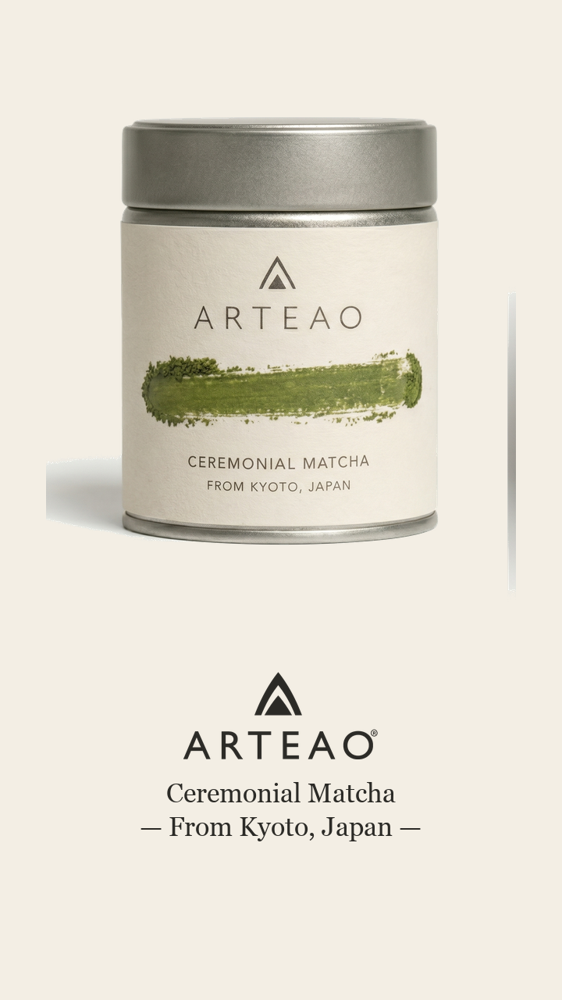

Matcha · Kyoto Play with soundArteao · DTC tea
The champagne of matcha, finally moving.
Single-origin Kyoto matcha with a story told entirely in stills. We made three concept films that bring the whisk-and-froth ritual to screen.